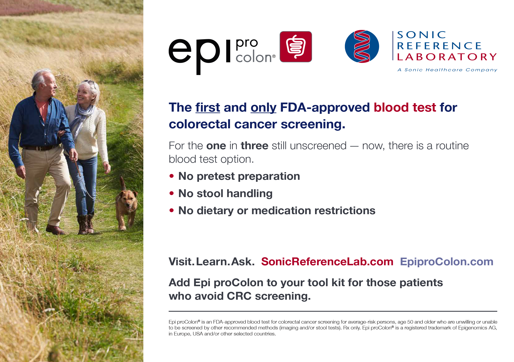

Home
(current)
About
About SRL
Leadership
Licensure and Accreditation
Hospital and Lab Partnerships
Quality Assurance
Test Menu
Sonic Healthcare
Sonic Healthcare Global
Sonic Healthcare USA
USA Locations
Contact Us
Featured Testing
Epi Procolon

Test Summary & Details »